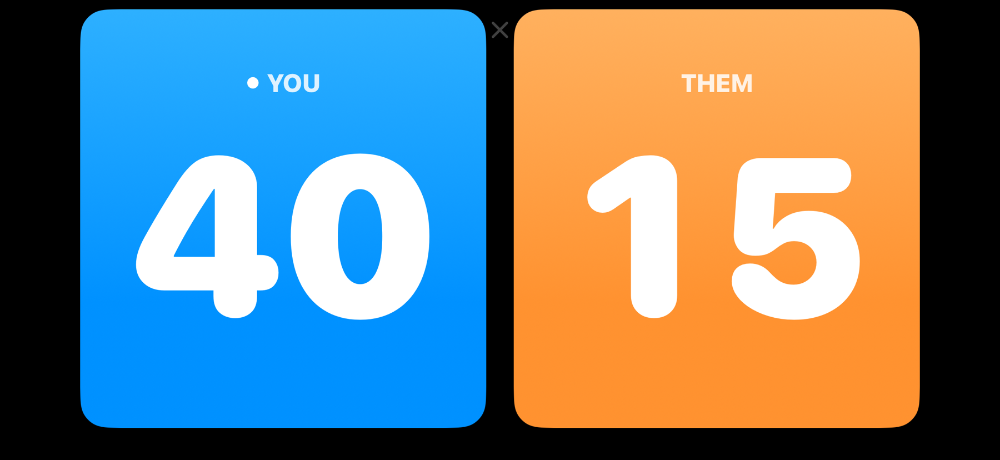
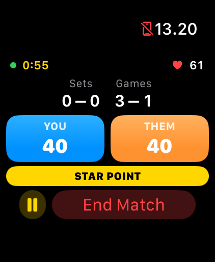
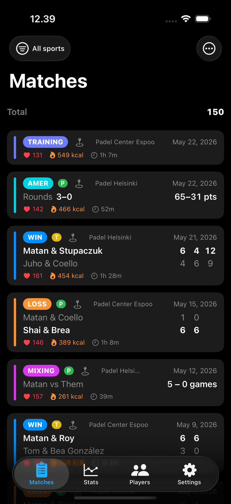
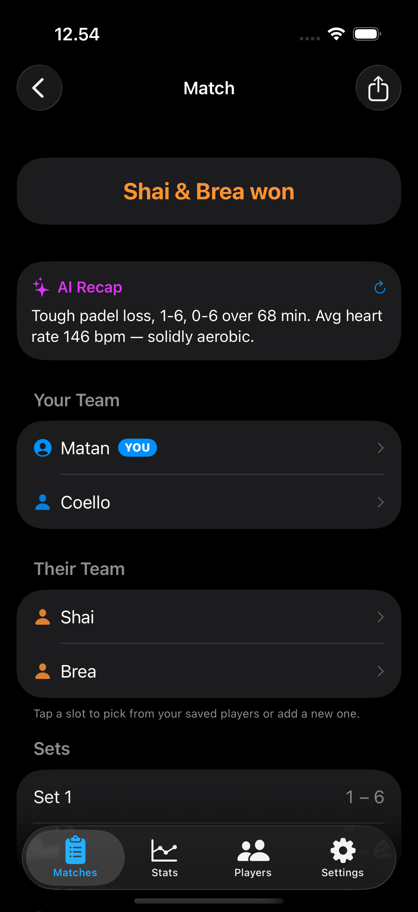
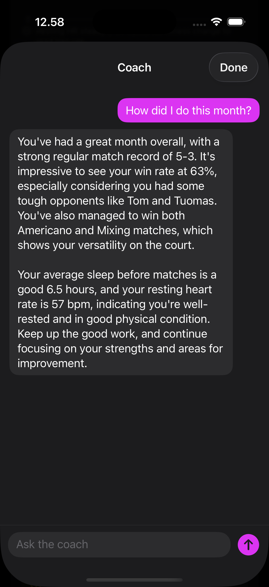
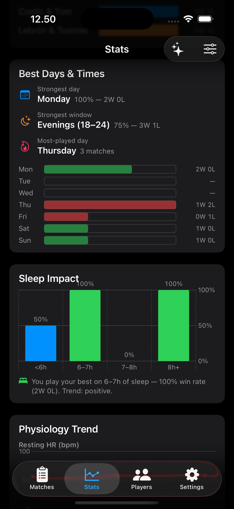
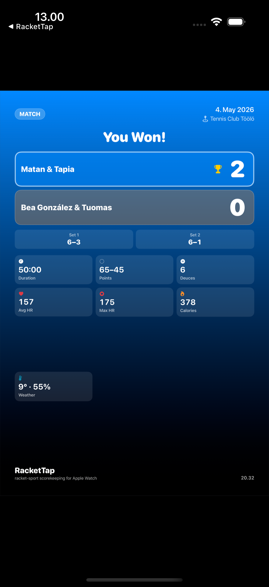

RacketTap turns your Apple Watch into a wrist-mounted racket-sport scorekeeper. Tap to score, long-press to undo. Or score on the iPhone — even with a Bluetooth selfie remote. Three sports: padel, tennis, and badminton. The iPhone companion turns those matches into something more — sleep-vs-performance correlation, a personalized recap for every match, an AI coach that knows your history, and a daily readiness signal before you step on court. Live Share your match to a friend's iPhone over Bluetooth, or post a live web link so anyone can follow from home. Your match history stays private on your device.
See it in action







What it does
- Watch-first scoring. Single tap for your team, double tap for the opponents, long-press to undo. Designed for use while playing.
- Three sports today.
- Padel — five match formats: Normal (full scoring with Star Point, Golden Point, or Advantage deuce — now with a configurable set structure: single set, best-of-3 or best-of-5, 4–9 games per set, and win-by-2-with-tiebreak or first-to-N), Mixing (rotating partners, running game tally), Training (workout-only, no scoring), Americano (point-based rounds with a configurable cap, default 32), and Tiebreak (a single standalone tiebreak — first to N, win by 2 — for when you've only got a few minutes). Serve tracking included — a dot marks the serving team; tap the tennis-ball icon on the scoreboard to flip the serve between games.
- Tennis — singles or doubles, best-of-3 or best-of-5, optional final-set match tiebreak to 7 / 10 / 12 points. Advantage or No-Ad deuce rule. Serve tracking included — a dot marks the server; tap the tennis-ball icon to hand the serve over. Tennis is the new addition in v5.
- Badminton — singles or doubles, real BWF rules. Rally scoring; games to 21 (win by 2 at 20-20, golden point at 30), best of 1/3/5 games (default 3). Three point formats: 21 (official), 15 (the new official BWF standard arriving January 2027 — win by 2 at 14-14, golden point at 21), and 11 (official BWF short format — sudden death at 10-10; an optional house-rule toggle switches to win-by-2/cap-15). Serve tracking follows BWF convention: serving indicator shows which side holds the serve and the active service court (R or L from the server's score parity), rally winner takes the next serve, automatic handover between games. Interval and change-ends cues fire at official midpoints (11/8/6 points) via haptic and voice. Badminton is the new addition in v6.
- Live courtside scoreboard on the iPhone. Place the phone sideways at the side of the court and it mirrors the watch in real time — huge score numbers visible from across the net. Optional auto swap-sides flips the display as you change ends (odd games or every set). Optional voice readout announces every point, game, set, and match aloud — pick the exact announcement voice, with a preview button (volume slider + on-view mute). Configurable per format.
- Apple Health integration. Each match is recorded in Apple Health as a sport-accurate workout — padel and tennis as Tennis, badminton as Badminton — with heart rate, active calories, duration, weather, and a single-dot location marker.
- iCloud backup. Match history mirrors automatically to your private iCloud database. Re-install on a new iPhone or iPad and sign in to the same Apple ID — your history comes back without any manual export.
- Rich match detail on iPhone. Every match shows an embedded map (tap to open in Maps), the weather captured at workout start, and a heart-rate-zone breakdown (Zone 1–5, computed from your age via HealthKit).
- Full match history on iPhone. Every session — matches (padel, tennis, or badminton), mixing, training, Americano — with the right summary for each format. A sport filter chip toggles between All / Padel / Tennis / Badminton. Tagged player names sync both ways between phone and watch.
- Per-player stats. Track your win rate with each partner and against each opponent. Opponent pairs deduplicate regardless of slot order.
- Customizable Stats tab. Drag to reorder sections, toggle to hide; pin the basics at the top. A sport filter at the top scopes everything below to padel, tennis, badminton, or all three (All / Padel / Tennis / Badminton). Includes Best Days & Times (per-weekday win rate + strongest time-of-day window), monthly activity calendar, win-rate trend, lifetime Americano totals, a Deuces card counting how many games went to 40-40 and which side won, opponent callouts (best, toughest, most-played), and Form & Streaks (last 10 W/L pills + longest streaks).
- Health correlation (on-device). With your permission, RacketTap reads sleep, resting heart rate, walking HR, HR variability, VO2 max, blood oxygen, and mindfulness around match times. The Stats tab surfaces a Sleep Impact chart (win rate bucketed by hours slept), a Physiology Trend (resting HR + VO2 max over time with an interpretive verdict), and a Today's Outlook readiness card that calls "ready / cautious / rest" before you play. Decline Health access and everything else still works.
- AI Match Recap. Every finished match opens with a 2–3 sentence personalized recap — your score, your effort, your physiology that day. Free on every device; on Apple-Intelligence-capable iPhones (15 Pro and newer with iOS 26), the recap is written by Apple's on-device language model. On older devices, you get a clean deterministic summary.
- AI Coach (Pro). Open a chat sheet from the Stats tab and ask anything about your game — "How did I do this month?", "Which partner do I win with the most?", "Is my fitness trending in the right direction?". The coach knows your full history and recent Health signals. Runs entirely on-device.
- Achievements. 14 unlockable badges spanning your first match, three matches in one day, your first hour-long match, winning after 7+ hours of sleep, and more.
- Days-played counter. Asked once during watch onboarding (or in iPhone Settings), then auto-counted from every day you play.
- Four UI languages. Both the iPhone app and the Apple Watch app have their own in-app language pickers with five options: System, English, Suomi, Español, עברית. Pick one language for the UI and a different one for the voice readout if you like — they're independent. RTL layout kicks in automatically when Hebrew is selected.
- Share matches with anyone. Send a finished match (or several at once) to another RacketTap user as a
.rackettapfile via AirDrop, Messages, or Mail — the recipient opens the file and the matches drop into their own history with full stats, no scoring required on their end. Or share a polished match card as an image to any app (Messages, Instagram, etc.), Workouts-style. - Phone-only scoring. Don't have your watch on you? Start and score a match right on the iPhone. Tap the left side for your point, tap the right side for theirs, long-press to undo. A "Quick Score" setup picks sport, format and players in a few seconds.
- Bluetooth remote support. Pair a cheap selfie-stick / camera shutter remote (Dispho, AB Shutter 3, generic clickers) and score points hands-free. Single press for your point, double-press for theirs, triple-press or long-press to undo. Mode + diagnostics live in iPhone Settings → Bluetooth Remote.
- Heart rate from any sensor. Pair a Bluetooth chest strap (Polar H10, Wahoo Tickr, Garmin HRM-Pro, MyZone) or a non-Apple watch in broadcast mode (Garmin, Suunto, Coros) under iPhone Settings → Heart Rate Sensor. Live BPM shows on the scoreboard during phone-scored matches; per-match HR averages save to the match record. Garmin, Whoop, Polar and any watch that bridges to Apple Health also fill heart rate and calories on saved matches automatically — no pairing needed.
- Live Share to a friend's phone (and their watch). Mirror your live match to a nearby friend's iPhone over Bluetooth — no internet, no accounts. They tap Join, you tap Accept, and the score streams to their phone in real time. If they have RacketTap on their watch, the mirror fans out there too. When the match ends, they can save a copy to their own history with the correct YOU / THEM perspective.
- Follow from home (online live score). Pro. Tap "Share online" during a match to get a web link — send it to anyone and they follow the live score in a browser, no app or account needed. It updates in near real time, shows the final result, then expires a few hours after the match; stop sharing any time. Only the score and team names are published — no Health data, no location.
- Watch complication. Add the RacketTap chip to your watch face for a one-tap start of your default match type (padel · normal/mixing/training/americano, tennis · singles/doubles, badminton · singles/doubles). Default is configurable per sport.
- Venues you've played. The first time you label a court in History, RacketTap remembers it. The next match at the same spot auto-fills the venue name. A Venues screen in iPhone Settings lets you rename or remove entries once you have any.
Privacy-first by design
Everything stays on your devices unless you explicitly share it — a match mirrored to a friend's phone, or an opt-in live web link that publishes only the score and team names (never Health data or location). No accounts. No analytics. No tracking. No third-party SDKs. The AI Coach and Match Recap use Apple's on-device language model — no prompt ever leaves your phone. Health data is read locally and never transmitted. Match history mirrors only to your own private iCloud database so you can re-install on a new device.
Free to download · Unlock Pro for $2.99 (launch price)